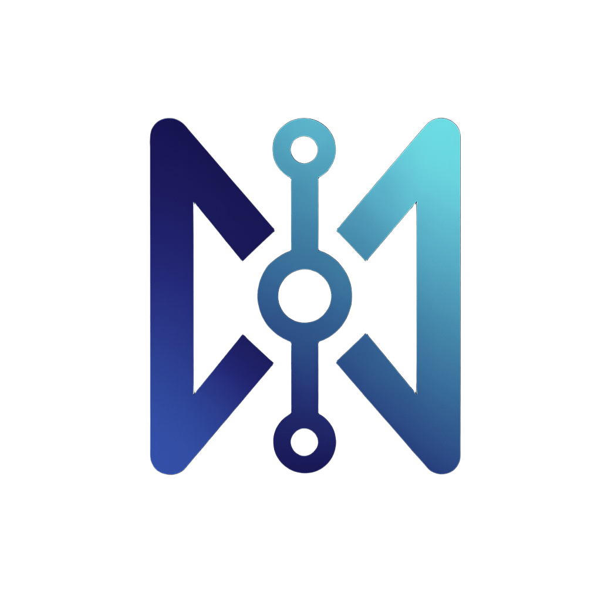

Términos y Condiciones de Uso
Estos Términos y Condiciones regulan el acceso, navegación y uso de los productos, aplicaciones, sitios web, servicios y experiencias digitales desarrollados bajo Nexus Ecosystem, incluyendo productos actuales y futuros disponibles en iOS, Android, web u otras plataformas compatibles.
Al acceder, descargar, instalar, registrarte, navegar o utilizar cualquier producto o servicio de Nexus Ecosystem, la persona usuaria declara haber leído, comprendido y aceptado íntegramente estos Términos. Si no estás de acuerdo con cualquiera de sus disposiciones, deberás abstenerte de usar el ecosistema, sus aplicaciones, sus sitios asociados y cualquier funcionalidad relacionada.
1. Identidad del servicio
Nexus Ecosystem es una marca y ecosistema digital que agrupa aplicaciones, sitios y productos tecnológicos con distintas finalidades funcionales. Este ecosistema puede incluir herramientas de salud, bienestar, organización personal, seguimiento, hábitos, productividad, experiencias visuales, servicios web y futuras líneas de producto.
Los presentes Términos aplican de manera amplia a:
- Aplicaciones móviles actuales y futuras de Nexus Ecosystem
- Sitios web oficiales, landing pages y páginas legales asociadas
- Funciones premium, experimentales, beta o en evolución
- Servicios complementarios, sincronización, respaldo o soporte
2. Elegibilidad y uso permitido
Para utilizar los productos o servicios de Nexus Ecosystem, la persona usuaria debe contar con capacidad legal suficiente conforme a la legislación aplicable y utilizar el servicio de manera lícita, responsable y de buena fe.
No está permitido utilizar el ecosistema para:
- Actividades ilícitas, fraudulentas o engañosas
- Suplantación de identidad o manipulación de cuentas, sesiones o integridad del sistema
- Acceso no autorizado, scraping, explotación automatizada o abuso técnico de la plataforma
- Ingeniería inversa, descompilación, modificación o reproducción no autorizada
- Uso que vulnere derechos de terceros, propiedad intelectual o normativa aplicable
3. Naturaleza de los productos
Los productos de Nexus Ecosystem pueden estar orientados a organización, seguimiento, bienestar, productividad, visualización de información o acompañamiento funcional.
3.1 No sustitución profesional
Salvo que expresamente se indique en una función determinada, el ecosistema y sus aplicaciones no constituyen servicios médicos, clínicos, hospitalarios, psicológicos, psiquiátricos, terapéuticos, farmacéuticos, financieros, legales ni profesionales regulados.
En consecuencia, las personas usuarias reconocen que:
- Los productos de Nexus Ecosystem no sustituyen consulta profesional especializada
- No deben utilizarse como única base para decisiones médicas, clínicas, legales, financieras o equivalentes
- Cualquier decisión relevante debe contrastarse con la persona profesional competente
3.2 No garantía de resultados
Nexus Ecosystem no garantiza resultados concretos, mejoras específicas, continuidad permanente, exactitud absoluta, ausencia total de errores ni adecuación universal a todas las necesidades de cada persona usuaria.
4. Cuentas, acceso y disponibilidad
Algunos productos o funciones del ecosistema pueden requerir configuración local, autenticación, inicio de sesión, acceso a servicios complementarios o determinados permisos del dispositivo.
Nexus Ecosystem podrá, en cualquier momento y sin necesidad de previo aviso:
- Actualizar, modificar, suspender o retirar funcionalidades
- Agregar o eliminar características, módulos o pantallas
- Activar funciones beta, premium, limitadas o regionales
- Restringir disponibilidad por plataforma, país, versión o compatibilidad
La disponibilidad del ecosistema puede variar según dispositivo, sistema operativo, conexión, región geográfica, tienda de distribución o limitaciones técnicas de terceros.
5. Información ingresada por la persona usuaria
La persona usuaria es la única responsable del contenido, datos, configuraciones, registros, preferencias, horarios, recordatorios, información personalizada o cualquier otro dato que ingrese, edite, importe, sincronice, conserve o elimine dentro de los productos de Nexus Ecosystem.
Nexus Ecosystem no garantiza que la información ingresada por la persona usuaria sea completa, correcta, actualizada o adecuada a sus necesidades específicas.
6. Permisos del dispositivo y funcionamiento
Dependiendo de la naturaleza de cada aplicación, Nexus Ecosystem puede solicitar permisos del sistema como notificaciones, cámara, almacenamiento, archivos, acceso a alarmas exactas, tareas en segundo plano u otros permisos razonablemente necesarios para ofrecer una funcionalidad determinada.
La persona usuaria reconoce que limitar, negar o revocar estos permisos puede afectar de forma parcial o total la experiencia, la precisión, la programación de eventos o la continuidad de ciertas funciones.
7. Servicios tecnológicos y componentes de terceros
Para operar adecuadamente, Nexus Ecosystem puede apoyarse en servicios tecnológicos, infraestructura, proveedores o componentes de terceros para funciones como almacenamiento, respaldo, distribución, análisis técnico, autenticación, sincronización, notificaciones, monitoreo de errores, continuidad del servicio o soporte operativo.
Nexus Ecosystem no será responsable por fallas, cambios, interrupciones, limitaciones, bloqueos, retrasos o incidencias originadas directamente por dichos terceros, por las tiendas de aplicaciones, por proveedores de red, por fabricantes de dispositivos o por sistemas operativos.
8. Propiedad intelectual
Todo el contenido, software, estructura, diseño, interfaz, identidad visual, logotipos, iconos, textos, marcas, nombres comerciales, componentes, ilustraciones, capturas, material gráfico, documentación y demás elementos del ecosistema pertenecen a Nexus Ecosystem o a sus respectivos titulares, y se encuentran protegidos por la normativa aplicable en materia de propiedad intelectual e industrial.
El uso del ecosistema no otorga a la persona usuaria derecho alguno de propiedad sobre tales elementos.
8.1 Licencia limitada
Se concede a la persona usuaria una licencia limitada, personal, revocable, no exclusiva e intransferible para usar los productos de Nexus Ecosystem únicamente conforme a estos Términos y para fines legítimos de uso personal o interno, según la naturaleza del producto.
9. Restricciones de uso
Queda estrictamente prohibido:
- Copiar, revender, sublicenciar o redistribuir el ecosistema sin autorización
- Desarrollar obras derivadas o productos competidores a partir de elementos protegidos
- Intentar obtener acceso indebido a infraestructura, código o integraciones
- Manipular métricas, notificaciones, sincronización o flujos internos de la plataforma
- Eliminar avisos de titularidad, copyright o identificación del ecosistema
10. Actualizaciones y versiones
Nexus Ecosystem puede publicar actualizaciones, parches, nuevas versiones o migraciones funcionales en cualquier momento. Algunas actualizaciones podrán ser necesarias para conservar compatibilidad, seguridad o continuidad operativa.
La persona usuaria reconoce que no todas las versiones antiguas serán soportadas indefinidamente y que ciertas funcionalidades podrían cambiar, desaparecer o evolucionar sin obligación de mantener compatibilidad retrospectiva absoluta.
11. Privacidad y tratamiento de datos
El uso del ecosistema también se rige por el Aviso de Privacidad oficial de Nexus Ecosystem, el cual debe interpretarse conjuntamente con estos Términos.
La persona usuaria acepta que cierta información pueda ser tratada conforme a dicho Aviso, exclusivamente para habilitar funciones, mantener continuidad, reforzar seguridad, ofrecer soporte o mejorar la experiencia general del servicio.
12. Limitación de responsabilidad
En la máxima medida permitida por la legislación aplicable, Nexus Ecosystem, sus desarrolladores, colaboradores, operadores, licenciatarios y proveedores tecnológicos no serán responsables por:
- Errores, omisiones, interrupciones o fallos del servicio
- Pérdida de información, configuraciones, historiales o datos
- Decisiones tomadas por la persona usuaria con base en información mostrada por el ecosistema
- Incompatibilidades con dispositivos, sistemas, capas de fabricante o configuraciones particulares
- Daños indirectos, incidentales, especiales, consecuenciales o pérdida de ingresos, oportunidades o datos
- Eventos atribuibles a terceros, tiendas, redes, proveedores o causas fuera de control razonable
12.1 Uso bajo responsabilidad propia
La persona usuaria acepta que utiliza los productos de Nexus Ecosystem bajo su propia responsabilidad y que el ecosistema se proporciona en la medida legalmente permitida “tal cual” y “según disponibilidad”.
12.2 Límite máximo de responsabilidad
En caso de que, pese a lo anterior, se determinara alguna responsabilidad exigible a Nexus Ecosystem, dicha responsabilidad total acumulada quedará limitada al menor de los siguientes montos:
- La cantidad efectivamente pagada por la persona usuaria por el producto o servicio específico en los últimos 12 meses, si existiera
- Un dólar estadounidense (USD $1.00), cuando no exista pago aplicable
- El monto mínimo obligatorio que resulte irrenunciable conforme a la legislación aplicable
13. Indemnización
La persona usuaria acepta defender, indemnizar y mantener indemne a Nexus Ecosystem, sus desarrolladores, operadores y colaboradores frente a reclamaciones, acciones, daños, pérdidas, responsabilidades, costos y gastos derivados de:
- Incumplimiento de estos Términos
- Uso indebido, ilícito o abusivo del ecosistema
- Violación de derechos de terceros
- Uso del servicio de forma contraria a la normativa aplicable
14. Suspensión o terminación
Nexus Ecosystem podrá suspender, restringir o terminar el acceso total o parcial al servicio, sin responsabilidad, cuando existan razones técnicas, operativas, legales, de seguridad, de cumplimiento o de protección del ecosistema.
La persona usuaria también podrá dejar de utilizar el servicio en cualquier momento, eliminando la aplicación, dejando de acceder al sitio o cesando el uso de la funcionalidad correspondiente.
15. Fuerza mayor
Nexus Ecosystem no será responsable por incumplimientos, retrasos o interrupciones causados por hechos fuera de su control razonable, incluyendo fallas masivas de red, desastres naturales, actos gubernamentales, conflictos, eventos de seguridad, interrupciones de terceros, restricciones regulatorias o incidencias generalizadas de infraestructura.
16. Separabilidad
Si alguna disposición de estos Términos fuera declarada inválida, inaplicable o nula, dicha circunstancia no afectará la validez del resto del documento, el cual continuará en pleno vigor.
17. No renuncia
La falta de ejercicio de cualquier derecho o facultad derivada de estos Términos no se considerará renuncia al mismo, salvo manifestación expresa y por escrito.
18. Ley aplicable y jurisdicción
Estos Términos se interpretarán conforme a la legislación aplicable que resulte competente en función de la operación del servicio y del lugar de residencia o consumo cuando así lo exijan disposiciones imperativas de protección a personas consumidoras o usuarias.
En caso de controversia, las partes procurarán una solución amistosa previa. De no ser posible, la controversia se someterá a la autoridad competente conforme a la legislación aplicable.
19. Idioma
Estos Términos pueden presentarse en distintos idiomas. En caso de divergencia interpretativa, prevalecerá la versión en español, salvo que una norma imperativa disponga otra cosa.
20. Contacto
Para consultas legales, soporte o cuestiones relacionadas con estos Términos:
nexus.ecosystem.soporte@gmail.com
21. Aceptación final
Al continuar usando cualquier producto o servicio de Nexus Ecosystem, la persona usuaria declara que:
- Ha leído íntegramente estos Términos
- Comprende su alcance legal y operativo
- Acepta que el uso del ecosistema se realiza bajo su propia responsabilidad dentro de los límites aquí previstos